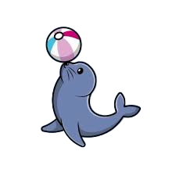
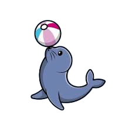

La familia de las focas es muy diversa, con más de 30 especies repartidas por diferentes océanos y mares del mundo, cada una con características y comportamientos únicos que las hacen fascinantes. Por ejemplo, las focas monje, en peligro crítico de extinción, habitan en aguas tropicales y subtropicales, mostrando que no todas prefieren climas fríos. Las focas de puerto, muy comunes en el hemisferio norte, son conocidas por su adaptabilidad y sociabilidad con humanos, lo que las ha hecho famosas en acuarios y zoológicos.
Existen más de 30 especies de focas, entre las más conocidas se encuentran:
Foca común (Phoca vitulina): Habita en el Atlántico Norte y el Pacífico Norte. Es una de las especies más estudiadas.
Elefante marino (Mirounga spp.): La especie más grande de todas, famosa por su gran tamaño y la nariz parecida a una trompa del macho.
Foca leopardo (Hydrurga leptonyx): Vive en la Antártida y es una de las más agresivas, incluso come pingüinos.
Foca anillada (Pusa hispida): Habita en el Ártico, adaptada a vivir entre el hielo.
Foca cangrejera (Lobodon carcinophaga): A pesar de su nombre, se alimenta principalmente de krill.
Cada especie tiene características únicas que la adaptan a su ambiente particular.